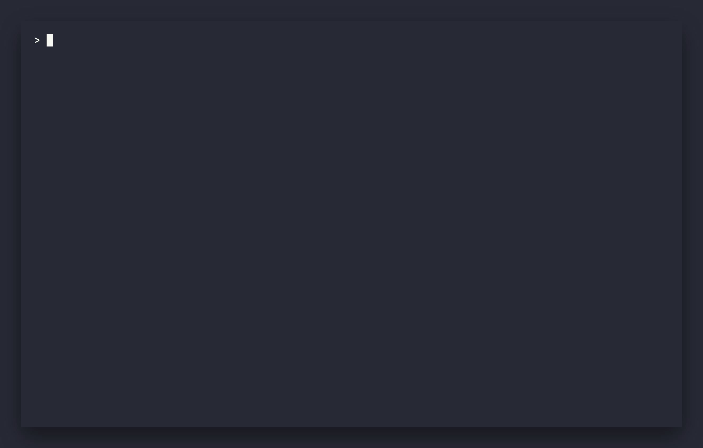

A fast, cross-platform terminal user interface (TUI) directory comparison tool written in Rust — align, diff, filter, and sync directories in real-time.
$ curl -fsSL https://raw.githubusercontent.com/akunzai/duodiff/main/install.sh | bash
Detects your platform, verifies its SHA-256 checksum, and installs to ~/.local/bin — Linux, macOS & Windows (Git Bash).
More paths (Homebrew, Scoop, PowerShell, crates.io, source, duodiff --upgrade): docs/INSTALL.md

Clean, robust, and lightning-fast directory comparisons.
Balanced view showing matching, differing, and missing folders/files side-by-side. Focus highlights and synchronized mouse scrolling keep context clear.
All directory alignment calculations and file content MD5 streaming checksum computations run in non-blocking background tasks, keeping the UI fully interactive.
Side-by-side file diff with intraline highlights, jump to next change (N/P), per-hunk merge ([/]), or whole-file copy between panes (L/R) with confirmation. Prefer an external tool? Launch it from the same UI.
A complete set of tools to explore, diff, and resolve directory differences.
Toggle between Fast mode (size and modification time) and Precise mode (streaming MD5 content hashes) with c. Swap left and right roots anytime with s.
In-app line-level diffs with character-level highlights, or hand off to vim, nvim, code, meld, difft, and friends — or open a file in $EDITOR/$VISUAL.
Slash-search the tree with /, then commit the pattern or toggle diffs-only with f while typing — zero through the noise to the files that matter.
Arrow keys or hjkl, plus Ctrl+f/Ctrl+b page scroll. Wheel scrolls, clicks select, and double-clicks open diffs or expand folders. Focus panes with 1/2.
Unified menu (;) and command palette (Ctrl+p), topic-based Help (?), and a Config screen (C) for external tools and daily update checks — saved under ~/.config/duodiff.
Standalone installs can self-update with duodiff --upgrade. A quiet daily background check surfaces newer releases without interrupting your flow.
Zero external runtime dependencies. Runs standalone on macOS, Linux, and Windows.
Requires a terminal supporting truecolor or 256 colors. Unicode and emoji font support makes icons cleaner.
Required only if building from source. Pin versions using mise or build with cargo build.
For launching external diff editors from the UI, standard tools like code, nvim, or meld are supported.